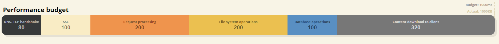
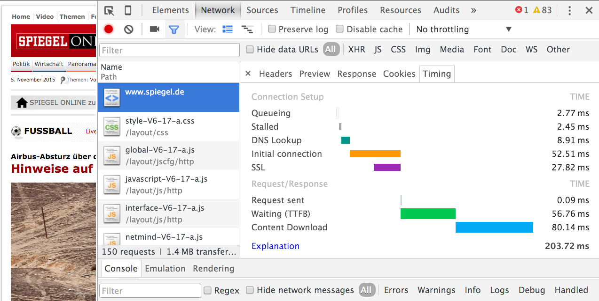
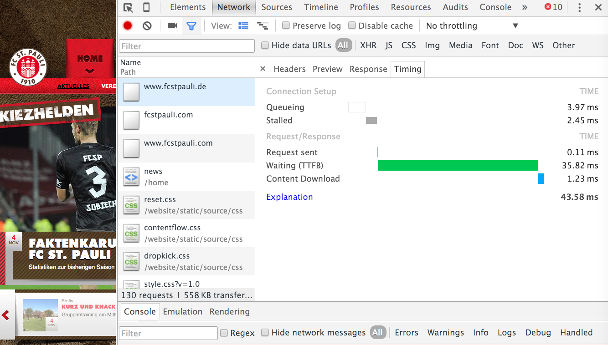
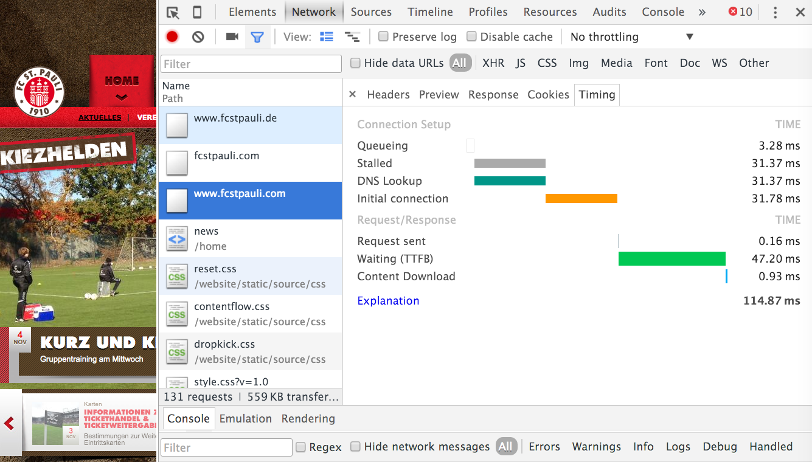
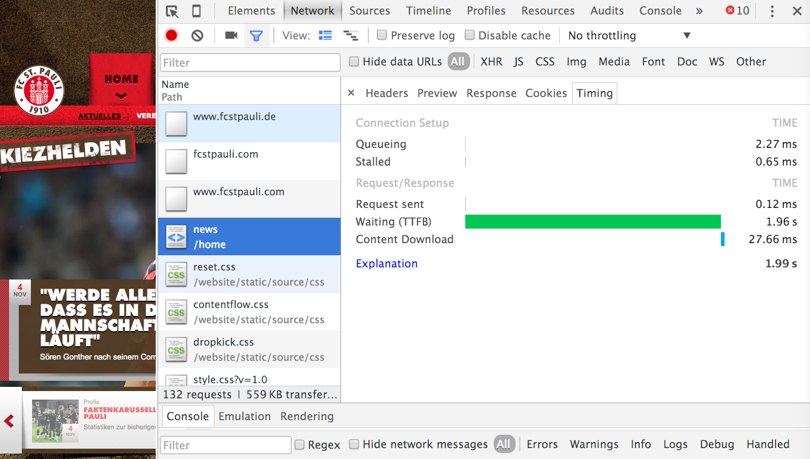
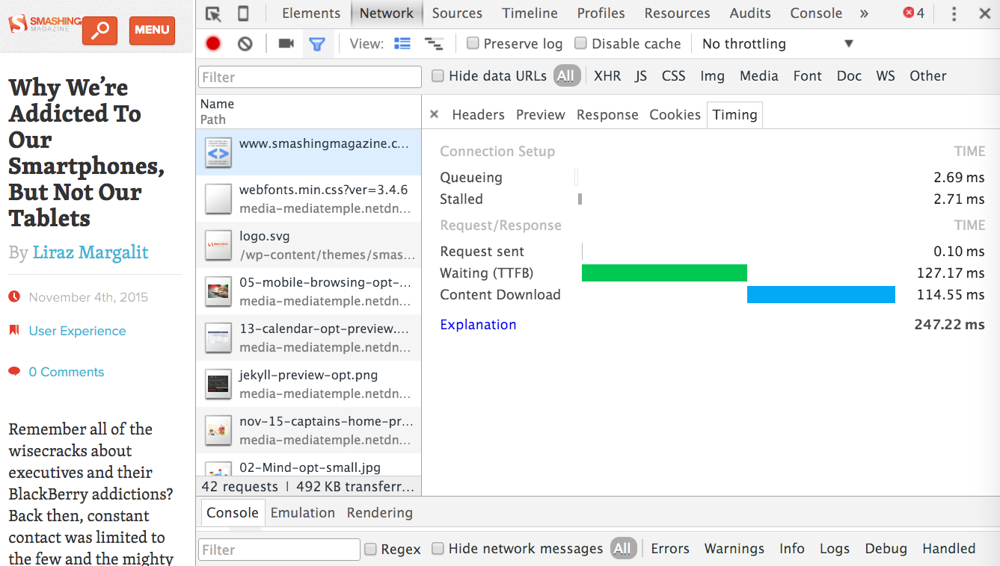
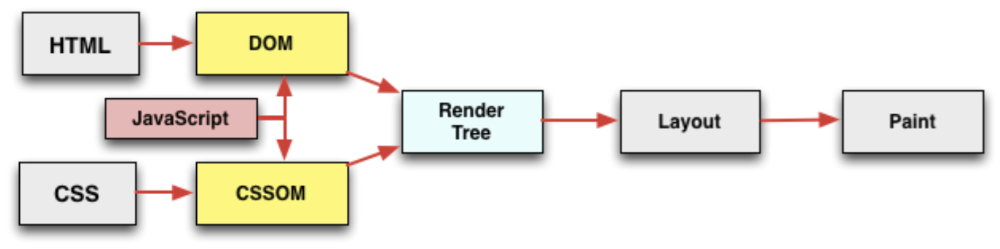

Hands-on Web Performance Analysis
with Chrome Dev Tools, Google PageSpeed Insights and WebPagetest
Jan
Weinschenker
www.holisticon.de
jan.weinschenker@holisticon.de
@janweinschenker
Management- and IT-Consulting
Hamburg based team of 45 Consultants and Trainers
Agenda
- Introduction
- Google Chrome Dev Tools
- Google PageSpeed Insights
- WebPageTest
- Future prospect: HTTP/2
Introduction
- History
- Performance by Design
Google Chrome Dev Tools
- TTFB
- Concatenation, Spriting, Inlining
- Hands-on
Google PageSpeed Insights
- Minification, Compression, Image Optimizing
- Below the Fold / Critical Path
- Hands-on
WebPageTest
- Browser Caching
- Domain Sharding
- Content Delivery Networks
- 3rd-Party Scripts
- Hands-on
Future Prospects
- HTTP/2
Introduction
- History
- Performance by Design
History
- One of the first web browsers: 1990 LMB – Nicola Pellow

History
- WorldWideWeb/Nexus – Tim Berners-Lee 1991

History
- HTTP, FTP, NNTP, GOPHER, ...
Today
- HTML, CSS, JS, Icons, Images, Movies, ...
Performance by Design
- Think about performance from the beginning!
- Who is our target audience? And who is not?
- What are our performance requirements?
- Define a fixed performance budget! (∼ 1 sec)
Google Chrome Dev Tools
- TTFB
- Concatenation, Spriting, Inlining
- Hands-on
TTFB
- Time to first byte
- DNS-Lookup (chrome://net-internals/#dns)
- Establish connection
- SSL-Handshake
- Send request
- Wait for backend (hard disc, database, file system)
- Receive response
TTFB
- Improve backend performance (memory, cpu, hardware)
- Backend caching (e.g. Varnish)
- Reduce geographical distance to user (CDN, SSL termination)
- Use chunked encoding
- Use existing connections
TTFB - Spiegel
TTFB - St. Pauli
TTFB - St. Pauli

TTFB - St. Pauli
TTFB - St. Pauli
TTFB - Smashing Magazine
Concatenating, Spriting, Inlining
- Fewer requests low latency
- JS- and CCS-files can be combined
- Images can be combined into spritemaps or fonts
- Immediately required resources can be inlined
- Spiegel.de
- FC St. Pauli
- Smashing Magazine
- All of this could be obsolete with HTTP/2
Hands-on Google Chrome Dev Tools
Check for http/2:
https://tools.keycdn.com/http2-test
Google PageSpeed Insights
- Minification, Compression, Image Optimization
- Below the Fold / Critical Path
- Hands-on
Minification, Compression, Image Optimization
- Less data needs a lesser amount of bandwidth.
- CSS, HTML & JS can be reduced.
- Textual responses can always be compressed.
- Images can be optimized.
- Spiegel.de
- FC St. Pauli
- Smashing Magazine
Below the Fold / Critical Path
- Before the browser can render the page, it must construct the DOM and the CSSOM.
- DOM and CSSOM may be modified by JavaScript
- Therefore, unnecessary scripts and styles should be loaded asnychronically.
Below the Fold / Critical Path
- The webserver should only serve the initially needed content. Everything else: later!
- Spiegel.de
- FC St. Pauli
- Smashing Magazine
- https://developers.google.com/web/fundamentals/performance/critical-rendering-path/?hl=en
Hands-on Google PageSpeed Insights
https://developers.google.com/speed/pagespeed/insights/WebPageTest
- Browser Caching
- Domain Sharding
- Content Delivery Networks
- 3rd-Party Scripte
- Hands-on
Browser Caching
- Fewer Requests!
- Less Traffic!
- Reduced costs!
Browser Caching
- Strategy 1: Avoid requests!
-
With URL fingerprinting
http://static.bla.de/js/main.min.28101047.jscache-control: public, max-age=31536000 expires: Wed, 02 Nov 2016 15:49:00 GMT -
Without URL fingerprinting
http://bla.de/app/config.json http://bla.de/views/footer.htmlcache-control: public, max-age=86400 expires: Wed, 11 Nov 2015 14:55:34 GMT - Should be used for all static esources.
Browser Caching
- Strategy 2: avoid traffic!
-
Response-Headers:
last-modified: Mon, 05 Oct 2015 10:11:30 GMT etag: "0rrdr4ruwpoEkjfZ2WTN0BrU83U=" -
Request-Headers:
If-Modified-Since: Mon, 05 Oct 2015 10:11:30 GMT If-None-Match: "0rrdr4ruwpoEkjfZ2WTN0BrU83U=" -
Status Code:
HTTP/1.1 304 Not Modified - All dynamic resources
- Example: Spiegel
Domain Sharding (HTTP/1.1)
- Use the whole bandwidth!
- Trade-Off:
DNS Lookup, TCP Connect,
SSL Handshake, Slow-Start - No Cookies!
- For all static resources
- Examples:
Spiegel,
St. Pauli,
HSV News,
Huffington Post
- All of this could be obsolete with HTTP/2
Content Delivery Networks
- Less latency!
- Makes sense for sites with a global audience.
- A light-beam needs ∼50ms to pass the flight distance between NYC and Singapore (15,339km).
3rd-Party Scripts
- High risk!!!
- Load asynchronically!
- Perform SPOF-tests
Hands-on WebPageTest
http://www.webpagetest.org/HTTP/2
- Multiplexed Streams: Connection sharing
- Only one handshake (SSL/TLS) for every connection
- Domain Sharding, Concatenation, Image Spriting etc. become obsolete
- Server Push: send assets (wie JS and CSS) proactively
- Header Compression: send protocol headers as one compressed block
- Binary protocol: less code, easier parsing
- Example: A grid of 180 tiled images
Q&A
Thank you!
Slides are available at: